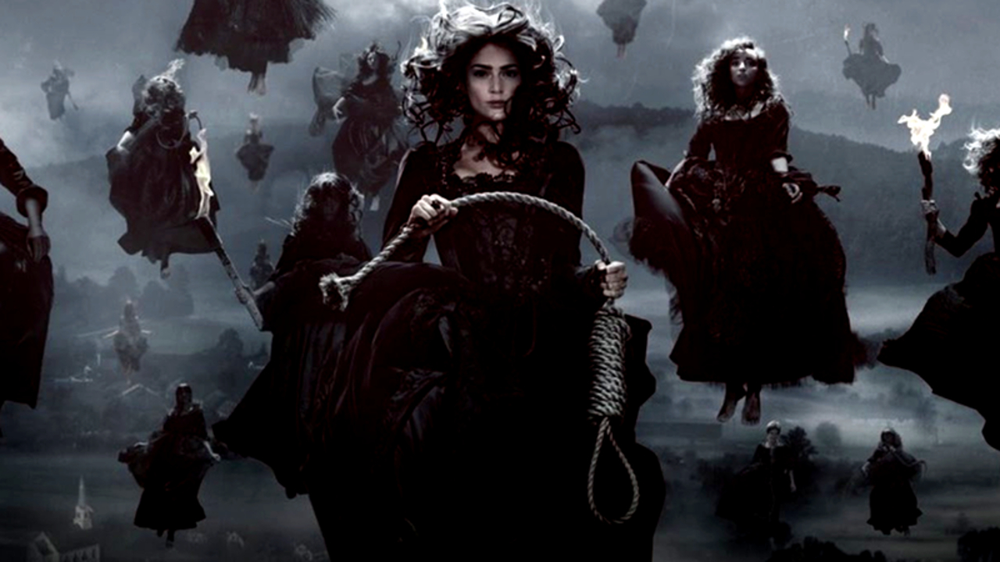
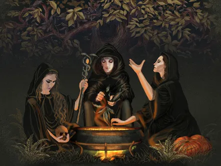
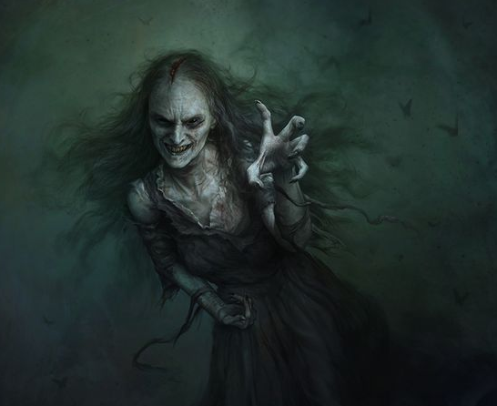

Bruxas: e a arte das Trevas

Desde os primórdios da humanidade, a figura da bruxa paira entre o medo e o fascínio. Guardiãs de segredos antigos, senhoras de poções e palavras proibidas, as bruxas sempre habitaram a fronteira entre o mundo visível e o invisível. Mas quem são elas, afinal? E de onde vem o poder sombrio que carregam?
Origens e Evolução
A lenda das bruxas nasce nas sombras das civilizações antigas. Em tempos remotos, eram vistas como curandeiras e sacerdotisas, detentoras de saberes sobre a natureza, as ervas e os astros. Com o passar dos séculos, especialmente durante a Idade Média, a Igreja passou a associar seus rituais à heresia e ao pacto com o demônio. Assim, o que antes era sabedoria virou magia negra, e as bruxas se tornaram alvos de perseguição, julgamentos e fogueiras. Ainda assim, o mito resistiu — evoluindo com o tempo e tornando-se símbolo de liberdade, mistério e poder oculto.
Poderes e Habilidades
As bruxas são conhecidas por dominar a arte das trevas, mas seus dons vão muito além da maldição. Elas praticam feitiçaria, necromancia, leitura dos astros, manipulação de elementos, poções encantadas e invocações espirituais. Algumas controlam o clima, outras se comunicam com os mortos ou preveem o destino. Mas toda bruxa carrega um dom singular, ligado à sua linhagem, ao seu pacto… ou ao seu próprio coração sombrio.
As Bruxas Mais Conhecidas
A história e o folclore estão repletos de nomes temidos e reverenciados:
- Morgana Le Fay - a feiticeira lendária das histórias do Rei Arthur, senhora das ilusões e do misticismo celta.
- Baba Yaga - a bruxa da floresta do folclore eslavo, que vive numa cabana sobre patas de galinha e devora os imprudentes.
- Circe - a bruxa grega que transformava homens em feras, dominando a alquimia e o encanto.
- As Bruxas de Salém - símbolo trágico da perseguição e do medo, acusadas e condenadas sem piedade no século XVII.
Essas figuras ecoam até hoje, lembrando-nos de que a linha entre o mito e o medo é tênue como uma teia ao luar.
Rituais e Práticas
As bruxas realizam seus rituais sob o manto da noite, guiadas pelas fases da lua e pelos ciclos da natureza. Entre os mais conhecidos estão:
- Sabás - encontros noturnos para celebrar o poder, a colheita e os pactos sombrios.
- Feitiços e encantamentos, feitos com símbolos, ervas e palavras sussurradas.
- Poções e elixires, preparados em caldeirões fumegantes para curar… ou amaldiçoar.
- Evocações espirituais, onde entidades das trevas ou forças antigas são invocadas para conceder poder.
Cada gesto, cada chama acesa, tem um significado profundo — um elo com forças que habitam além do véu.
Interpretações Modernas
Nos tempos atuais, a imagem da bruxa se transformou. De vilã temida, passou a símbolo de autonomia, sabedoria e resistência feminina. Muitos veem nelas a representação da conexão com a natureza e do respeito pelo oculto. No entanto, nas sombras da cultura popular, as bruxas ainda encantam, assustam e seduzem — seja nas telas, nos livros ou nas florestas sob a lua cheia. Porque, mesmo no mundo moderno, há mistérios que a ciência não explica… e sussurros antigos ainda ecoam entre as árvores.